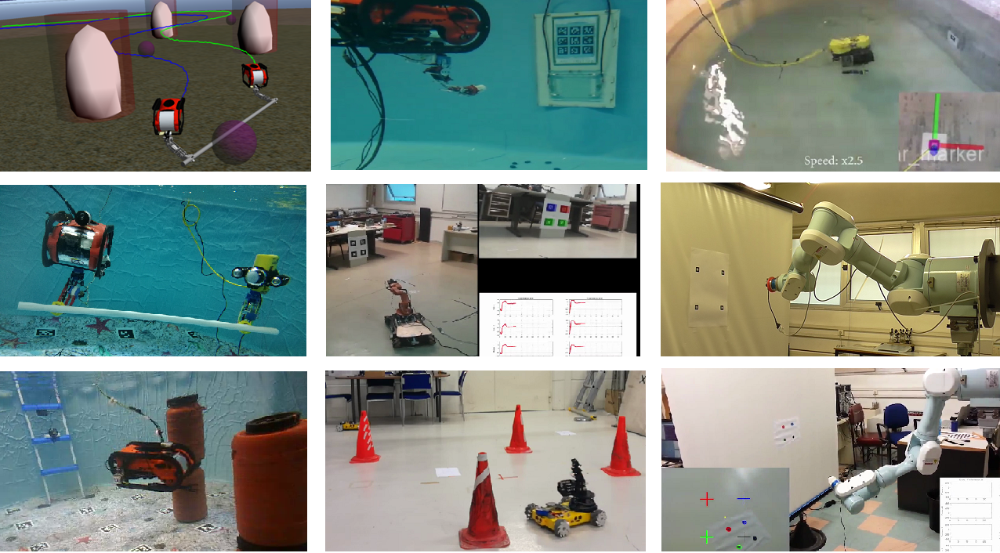

|
 |
I have performed an extensive number of real time experiments conducted with underwater,
ground and manipulator robotic systems. A list of my experiment’s videos can be found in my Youtube page.
During these experiments, I got specialized in program languages such as Python, C as well as various number of libraries in ROS for controlling of embedded systems:
Software:
Solidworks, Autodesk Inventor, Mathematica,
MS Office-Excel-Power Point, MS Visio,
Adobe Premiere (Video Processing), Inkscape, Latex.
|